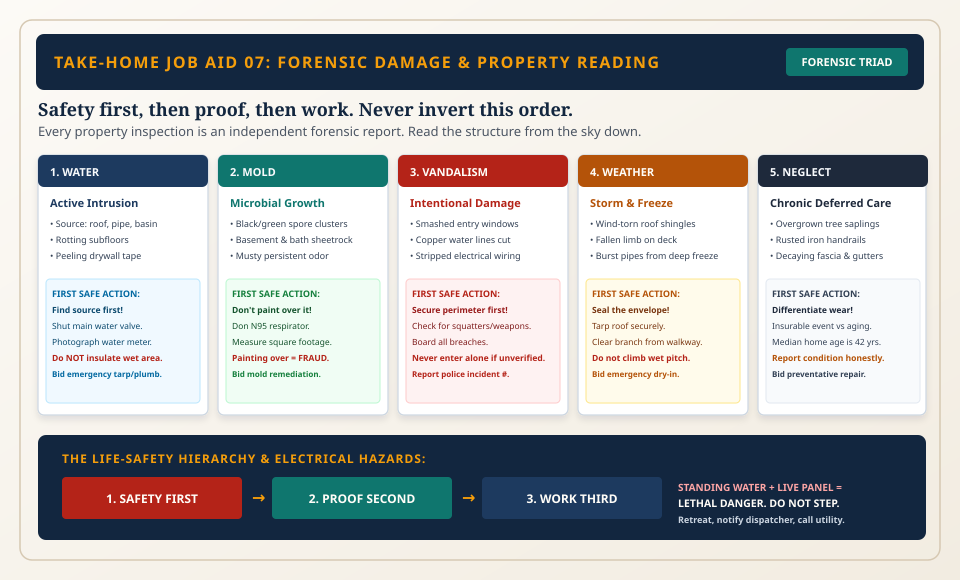

Per-Type Dealing Cards: Damage & Scope Matrix
Dealing cards for distinguishing sudden insurable hazard damage from gradual deferred wear, establishing allowable scopes across client types.

Hazard Versus Deferred Wear
Insurers cover sudden accidental events (storm damage, frozen burst pipes) but reject ongoing deferred neglect (dry rot, moss, worn shingles).
Moisture & Water Migration
Tide marks reveal basement flood levels; ceiling stains map roof valley flashing leaks; warped subflooring reveals hidden supply splits.
Structural Boundary Forensics
Stair-step cracks in brick mortar indicate foundation subsidence, requiring licensed structural engineer review prior to repair bids.
Operational Depth: Work Order Docket, Rules & Protocols ▼ Click to Toggle Depth Details
DAMAGE FORENSIC & DEALING CARD REVIEW: Classify property damage into insurable casualty vs deferred maintenance. Document flood waterline height against measuring tape. Inspect foundation for structural stair-step fissures.
Governing Rules & Compliance Standards
Causal Separation Standard
Field documentation must explicitly isolate sudden insurable damage from long-term deferred maintenance wear.
Non-Destructive Testing Rule
Inspectors assess through non-destructive visual documentation; zero drywall demolition permitted without bid approval.
Fixed Reference Photography
Photograph moisture tide lines and structural cracks against a rigid measuring tape.
Operational Requirements & Dealing Protocols
Four-Elevation Wall Assessment
Document front, rear, left, and right wall planes sighting along masonry courses.
Roof Pitch Forensic Context
Provide wide contextual roof shot accompanied by close-up of shingle condition.
Dealing Point — Insurance Adjuster Walkthroughs
Provide unbiased factual photo dockets; never speculate on liability or policy coverage.